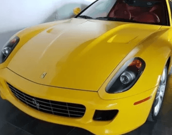
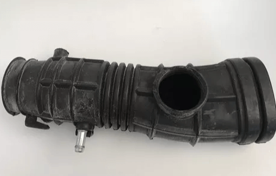

El Airbag es una de las medidas de seguridad más importantes de todo el siglo, se comenzó a implementar a
finales de los setentas.
Cuando un vehículo choca este produce una desaceleración bastante fuerte superando las 20G, dicha desaceleración
hace que se habrá nuestro Airbag, este no es activado por el impacto lo cual explica porque si se choca a 5Km/h el Airbag no se libera.
La función
principal de este es reducir las lesiones provocadas cuando un cuerpo choca con el tablero, aunque se tenga colocado el cinturón de seguridad este sucede.
Se debe usar Airbag con el cinturón porque este puede transformarse en un arma que nos impulse a 300Km/h con el asiento.
El (Anti-Lock Brake System) o sistema de frenos antibloqueo mejor conocido como ABS impide que las ruedas se bloquean
al momento de un frenado brusco o en situaciones no favorables.
El ABS permite, por ejemplo prácticamente doblar el frenado o frenas con 2 ruedas en el
pavimento y dos en el terreno resbaladizo. Cuando un vehículo choca contra algo el vehículo se detiene de manera muy brusca, en dicha velocidad el vehículo
con toda su energia se anulan (pierde su energia) disipándose de maneras diversas en el vehículo.
Antes los vehículos eran un tanto más
duros de lo que son en la actualidad, estaban diseñados para resistir abolladuras por lo que cuando chocaban las personas resentían todo el impacto y no el
automóvil.
En la actualidad los vehículos están diseñados para doblarse de manera predeterminada al momento de chocar y absorber la
energia del impacto ademas de mantener sanos y salvos a los pasajeros.

El mantenimiento es una parte importante en nuestro vehículo por lo que se explicaran procedimientos
para mejorar funcionamiento y evitar riesgos.
Uno de los puntos más importantes es el cambio del aceite en nuestro vehículo, una vez que
el aceite ha sido utilizado y ha perdido sus propiedades, podemos darnos cuenta de ello porque este es mucho más líquido y negruzco, entonces no
proporcionara la lubricación necesaria y corremos el riesgo de que nuestro vehículo se desvíele (Romper el motor) o sufra algun daño
mayor en el motor.
En el mercado existen tres tipos de aceite, el mineral es el más barato, el sintético es un poco más caro y
uno que es mineral con componentes sintéticos que es de un precio intermedio.
Debemos tener en cuenta al momento de hacer un cambio de aceite
el grado, el cual nos indica la viscosidad de nuestro aceite, es preferible elegir los multigrado como lo es el 10W-40 debido a que se mantiene la viscosidad
sin importar que sean altas temperaturas o bajas, aunque si el fabricante indica un grado especifico ese debe ser usado y tener en cuenta en donde se usara
el auto, debido a que en temperaturas tropicales se usa otro que los lugares con temperaturas frías o nevadas constantes. Por lo regular se debe
cambiar el aceite por lo menos cada 5000km hasta los 10000km.
Para el cuidado de los neumáticos y balance del auto se recomienda revisar constantemente la
presión de estos para que soporten las cargas especificadas por el fabricante para evitar el deterioro prematuro de los neumáticos.
El otro punto es que se les haga una rotación cada 1000km, lo cual implica pasar los neumáticos de enfrente a la parte de atrás y los
de atrás a la parte de enfrente.
De ser posible practicarles una alineación y balanceo para que no se presenten vibraciones.
El otro punto es revisar la alineación porque si las ruedas están desalineadas nos desgastara la rueda al igual que si nuestros amortiguadores
se desgastan también los afectara, por lo que debemos verificar desde los 50000km-60000km si nuestros amortiguadores tienen mucho movimiento y si
revotan para saber si debemos cambiarlos.
El filtro de aire es un elemento que filtra las partículas sólidas que pueden entrar al motor
y dañarlo, un filtro sucio no filtra bien y se recomienda evitar el uso de filtros de baja calidad con menor capacidad, la durabilidad del filtro
depende enteramente de las condiciones del medio en que se usara.

El filtro de aceite también es sumamente relevante porque no permite el paso de los elementos
metálicos que se desprenden del motor con el desgaste, se recomienda hacer el cambio con cada cambio de aceite.
El cambio de las bujías debe ser realizado por lo menos cada 50000km pero pueden resistir hasta 100000km